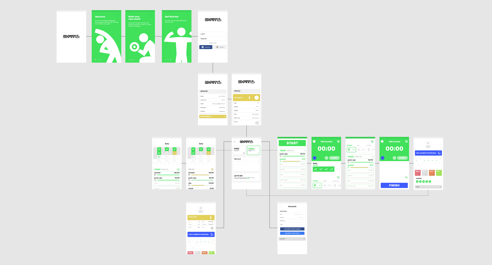

B-Fit
UI, Branding
2018
B-Fit was a comissioned project to conceptualize the idea of a virtual coach app. It brought together all the tools needed to coach yourself but with an interface that responded to your needs and progressed with you as you go.
